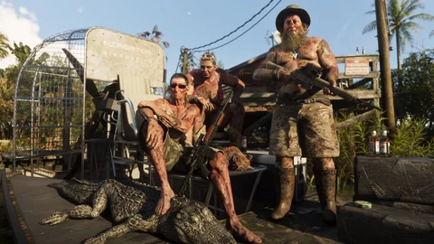
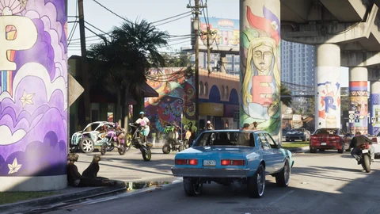

Animali · GTA VI
Gli animali di GTA VI
Alligatori, iguane, cervi, delfini e cani: la fauna di Leonida così come la mostrano le immagini ufficiali, e le oltre 170 specie annunciate da Rockstar.
Ogni scheda separa ciò che si vede nell’immagine da ciò che Rockstar ha scritto. Una specie riconosciuta dal sito o dai giocatori resta da confermare, e mostrare un animale non dice che lo si potrà cacciare. Capire gli stati.
Le 7 schede

Alligatore
La star delle paludi, e non l’unico predatore delle mangrovie.
L’attrazione più famosa di Grassrivers secondo Rockstar: lo si vede nuotare intorno agli idroscivolanti, e appeso al campo dei cacciatori delle paludi.
Vedi la scheda
Iguana verde
Una specie invasiva che prende il sole nelle Keys.
Rockstar la cita tra le specie invasive di Leonida; due screenshot delle Keys la mostrano, uno in primo piano su un tronco, l’altro in mezzo alla strada.
Vedi la scheda
Cani
Si possono accarezzare, e il gioco se ne accorge.
Nell’Extended Look, Jason accarezza un cane e compare l’icona di un angelo; altri se ne incontrano a Vice City e al campo dei cacciatori delle paludi.
Vedi la scheda
Cervi
Alla pozza d’acqua di Mount Kalaga, sotto lo sguardo di un puma.
Quattro cervi bevono e riposano in riva all’acqua a Mount Kalaga, il parco che Rockstar presenta come una zona di caccia; la loro specie non è nominata.
Vedi la scheda
Puma, procione e mammiferi selvatici
Un puma in agguato, un procione nel fango.
Un puma in agguato e un procione in fuga: i mammiferi selvatici degli screenshot, tra la trentina di specie terrestri che Rockstar annuncia.
Vedi la scheda
Uccelli della costa e delle paludi
Pellicani, fenicotteri e una sessantina di specie annunciate.
Rockstar annuncia oltre 60 tipi di uccelli, tra cui fenicotteri e pellicani; gli screenshot mostrano gabbiani, anatre, trampolieri e stormi sulle paludi.
Vedi la scheda
Fauna marina
Squali, balene e lamantini annunciati sotto la superficie.
Rockstar annuncia squali, balene, razze, tartarughe, meduse e lamantini; le immagini mostrano già delfini, una tartaruga marina e pesci di scogliera.
Vedi la schedaFonti ufficiali
Cosa ha mostrato Rockstar
Rockstar ha prima mostrato i suoi animali senza parlarne, poi li ha contati: più di 170 specie.
- Visto in un media
Trailer 1
Un gruppo di delfini nuota nella scia di un catamarano, intorno al minuto 0:11.

Immagine ufficiale Rockstar Games - Ufficiale
Pagine delle regioni
L’alligatore diventa l’attrazione più famosa di Grassrivers, e Mount Kalaga una zona di caccia e di pesca.

Immagine ufficiale Rockstar Games - Visto in un media
Screenshot ufficiali
Un’iguana nelle Keys, cervi e un puma al nord, alligatori intorno agli idroscivolanti.

Immagine ufficiale Rockstar Games - Visto in un media
Extended Look
Jason accarezza un cane, compare l’icona di un angelo; un chihuahua travestito passa nel montaggio finale.

Immagine ufficiale Rockstar Games - Ufficiale
Game Informer
Michael Kane annuncia più di 170 specie, tra cui più di 60 tipi di uccelli e più di 30 mammiferi terrestri.
Immagine ufficiale Rockstar Games
Sul sito una specie viene nominata solo se Rockstar l’ha nominata; altrimenti la scheda descrive ciò che si vede.
Osservazioni dei giocatori
Cosa ha identificato la community
I giocatori scrutano ogni sfondo. Ciò che ipotizzano resta citato come tale.
Le specie riconosciute dalla sagoma, come la spatola rosata o la lince rossa, restano da confermare nella loro scheda.
Domande aperte
Cosa resta da confermare
La lista delle specie è lunga; cosa ne fa il gioco resta da scoprire.
Quali animali si cacciano
La caccia è annunciata a Mount Kalaga, senza una lista della selvaggina.
Un animale da compagnia
Accarezzare un cane, sì; adottarne uno: nessuna notizia.
Rari e leggendari
Sono annunciati animali da rintracciare, senza lista né ricompense.
Lamantini, rospi delle canne, macachi
Nominati da Rockstar, mai mostrati.
I predatori
Il testo di Grassrivers ne promette di più pericolosi dell’alligatore, senza nominarli.
Ogni risposta finirà nella scheda della specie, con la sua fonte, appena sarà pubblicata.
Strumenti del sito
Cosa cambia per te
In attesa del gioco, individua le regioni più selvagge e prepara le tue escursioni.
Le schede degli animali si completeranno con il gioco, senza inventare nulla nel frattempo.
Domande
Domande frequenti
Le domande che si scrivono in un motore di ricerca, con risposte brevi e datate.
Quali animali ci sono in GTA 6?
Ci sono alligatori in GTA 6?
Quali animali si possono cacciare in GTA 6?
Si può avere un cane in GTA 6?
Ci sono squali e animali marini?
14 fonti consultate
Fonti e stati
Ogni affermazione di questa pagina ha uno stato e una fonte datata. Le pagine nuove sono state rilevate il 4 ottobre 2026 tramite motore di ricerca, perché quel giorno la loro apertura diretta era bloccata dall’area di lavoro; le pagine già citate dal sito mantengono la loro data.
Ufficiale
Pagina o video pubblicato da Rockstar (sito di GTA VI, Newswire, trailer, Extended Look), o dichiarazioni di un responsabile di Rockstar riportate da un media identificato, con la data.
Visto in un media
Ciò che un’immagine o una sequenza ufficiale mostra, senza un testo di Rockstar che lo dica: un’inquadratura di un trailer, uno screenshot, un momento dell’Extended Look, con il minutaggio quando è noto.
Identificazione della community
Collegamento fatto da giocatori, una wiki o un sito di fan (luogo reale, attore, contea). Citato come tale, mai presentato come confermato.
Da confermare
Domanda senza risposta pubblicata: prezzo, acquisto, accesso, ruolo nella storia. La scriviamo per non doverla indovinare.
Pagine consultate
- UfficialeRockstar Games: pagina ufficiale di Grassrivers
L’alligatore, attrazione più famosa delle paludi, e predatori molto più pericolosi nelle mangrovie.
- UfficialeRockstar Games: pagina ufficiale di Mount Kalaga National Park
Un parco presentato come una zona di caccia di prim’ordine, di pesca e di piste fuoristrada.
- UfficialeSito ufficiale di Grand Theft Auto VI (pagine “Only in Leonida”, edizioni, preordini)
Sei regioni e otto personaggi presentati il 6 maggio 2025; testi delle edizioni del 24 giugno 2026. Riletto il 27/09/2026 nelle pagine che lo citano (rockstargames.com non raggiungibile dal nostro laboratorio quel giorno).
- UfficialeRockstar Games: screenshot ufficiali di GTA VI
Screenshot delle regioni e dei personaggi (maggio 2025) e delle edizioni (giugno 2026); i locali nominati nei titoli degli screenshot.
- UfficialeRockstar Games: video ufficiali di GTA VI (Trailer 1, Trailer 2, An Extended Look)
Trailer 1 del 4 dicembre 2023, Trailer 2 del 6 maggio 2025, Extended Look del 27 agosto 2026: i fotogrammi del sito vengono da lì.
- UfficialeRockstar Newswire: Grand Theft Auto VI, An Extended Look
Presentazione di 26 minuti registrata su PS5.
- UfficialeMicrosoft Store: Grand Theft Auto VI, Ultimate Edition (scheda ufficiale dell’edizione)
“PTT YOUNGIN$ COMPOUND”: saccheggiare questo covo di gang e fuggire senza intoppi con oggetti speciali e merce di contrabbando unica.
- UfficialeInsider Gaming: più di 170 specie animali in GTA 6
Riprende il servizio di Game Informer: Michael Kane, di Rockstar, annuncia più di 170 specie, tra cui più di 60 uccelli e più di 30 mammiferi terrestri, e nomina lamantini, fenicotteri, pellicani, alligatori e specie invasive.
- UfficialeBeebom: un ecosistema di più di 170 specie
Lo stesso annuncio: specie autoctone e invasive, squali, balene, razze, tartarughe e meduse con movimenti propri.
- UfficialeGameSpot: la pesca e la caccia non funzionano come si crede
Parole riportate di Rob Nelson: catture della pesca rilasciate, caccia che fa guadagnare soldi.
- Visto in un mediaTheWrap: tutto ciò che mostra l’Extended Look
Jason accarezza un cane nel palazzo della scena d’apertura, e compare l’icona di un angelo.
- Visto in un mediaEngadget: breaking down the GTA 6 extended look
L’appartamento, Jason davanti alla TV, Real Dimez in cabina di registrazione.
- Identificazione della communityGTABase: elenco degli animali di GTA 6
Elenco di fan; parla di una lista di animali da spuntare, senza fonte ufficiale.
- Identificazione della communityGTA Intel: Grassrivers, le paludi in stile Everglades
Cita il testo ufficiale della regione e vi aggiunge specie che Rockstar non ha mostrato.
Cosa non facciamo. Nessun dato dai leak del 2022 o del 2026, nessun prezzo inventato, nessun accostamento presentato come confermato. Gli stati sono spiegati nel Tutorial.
Continua a esplorare


Il calcolatore
La caccia rende più di una missione?
Rockstar dice che la caccia rende, ma senza cifre. Scrivi quanto ti renderebbe una battuta di caccia e la sua durata: il calcolatore la confronta con le tue altre attività, all’ora di gioco.
E dopo?
Il seguito si scrive il 19 novembre 2026.
Ogni scheda si completerà con il gioco: cosa ci si trova, cosa ci si fa, quanto rende. Niente di inventato fino ad allora.